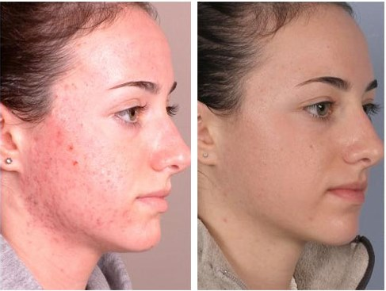

CRYSLALINE - ТОПОВОЕ СРЕДСТВО ДЛЯ БОРЬБЫ С ПРЫЩАМИ
Опубликовано .2020, 19:51 | Автор: Елена
Всем привет!
Так уж вышло, что далеко не все мои любимые подписчики имеют возможность взаимодействовать с видеоблогом. Поэтому я решила создать еще один, чтобы у вас была возможность его прочитать. Бегло, или же вдумчиво - решать вам. Но на сегодняшнюю тему для обсуждения я рекомендую обратить пристальное внимание. Итак, начнем!
Эту фотографию прислала мне одна из моих подписчиц. Разница между ними - примерно месяц. По моему совету девушка перестала каждое утро умываться тремя тониками,"Клерасилом", а затем тонировать себя в три слоя. Вместо этого она заказала себе Crystaline.
Что же такое Crystaline? Это уникальный крем-спорт, появившийся на рынке косметики относительно недавно. Разработкой средства занимались израильские и корейские профессионалы. Совместными усилиями у них получился реально действенный препарат, способный избавить кожу лица от прыщей и угревой сыпи за достаточно короткий срок. Все, что нужно - это каждое утро наносить Crystaline на проблемные участки кожи. Всё.
Чтобы понять принцип действия этого крема, нужно запомнить одну очень важную вещь: прыщи и угревая сыпь появляются не сами по себе, когда им вздумается. Все дело в сбое работы сальных желез - когда они увеличиваются в размерах, то утолщается слой роговых чешуек кожи. Они, в свою очередь, закупоривают поры, что и приводит к воспалению и появлению "проблем" на лице.
Уникальный состав Crystaline не только помогает устранить воспаление и уничтожить бактерии, но и открывает закупоренные поры, удаляя роговые пробки, а также существенно снижает жирность кожи. Как результат - крем-спот полностью контролирует функционирование сальных желез и устраняет последствия прыщей и угревой сыпи. Что самое важное - действие препарата сохраняется на долгое время после его применения. Другими словами, о прыщах и угрях можно вообще забыть.
Лично я приобрела Crystaline еще на его первой презентации в Израиле. Несмотря на небольшой размер тюбика, хватит его надолго, потому что средство нужно наносить в ОЧЕНЬ малых количествах.
Итак, если вы до сих пор не придумали, как победить ненавистные прыщи, то можете смело попробовать Crystaline. Продажа средства осуществляется на официальном сайте компании-представителя. Если есть сомнения - сомневайтесь и дальше. Но знайте - эта штука реально выручает. Проверено и мной, и моими подписчиками.
На этом закончим. Если у вас возникнут вопросы - вы знаете, где меня найти. Удачи!

Результаты есть. Пользуюсь ровно месяц, и в диком восторге от эффекта! Рекомендация Елены попала точно в цель, спасибо вам огромное!!!


Обалдеть, я думала, так не бывает. Тоже что ли себе заказать, а то иногда прыщи выскакивают так невовремя ((

Тоже сначала не верила. Но это реально классный крем. Пользовалась им две недели, потом прекратила, когда все прыщи сошли. С тех пор прошло уже больше месяца, а они все не появляются!


В борьбе с угревой сыпью Crystaline однозначно лучший вариант. Обидно, что до него столько денег потрачено впустую… Но зато я наконец нашла то, что нужно!


Девочки, а как долго идет доставка? За неделю успеют?

Если заказывать на официальном сайте, то точно успеют. Мне оттуда за пять дней привезли, подруге - тоже. Там еще кстати скидка сегодня действует, успевайте!
Блогеры онлайн


И еще 279 без аватара...
Читать ваш блог гораздо удобнее, чем смотреть. Спасибо за то, что услышали наши пожелания! Ну и отдельная благодарность за подробный обзор, обязательно попробую Crystaline.